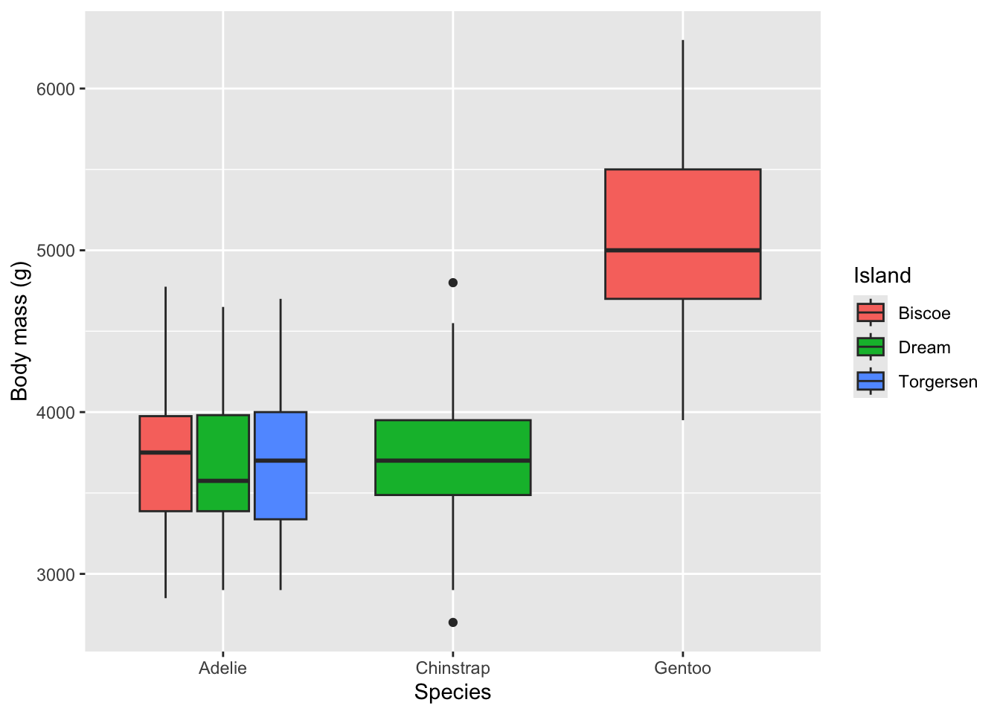
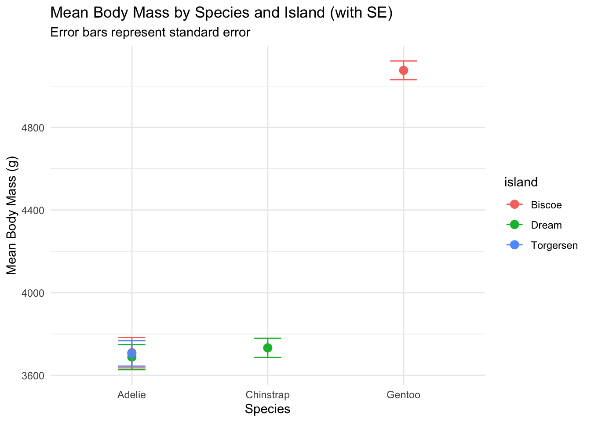

1 + 1[1] 2Quarto enables you to weave together content and executable code into a finished document. To learn more about Quarto see https://quarto.org.
When you click the Render button a document will be generated that includes both content and the output of embedded code. You can embed code like this:
1 + 1[1] 2You can add options to executable code like this
[1] 4The echo: false option disables the printing of code (only output is displayed).
source("code/Workshop1.R", echo=TRUE)
> library(tidyverse)── Attaching core tidyverse packages ──────────────────────── tidyverse 2.0.0 ──
✔ dplyr 1.1.4 ✔ readr 2.1.6
✔ forcats 1.0.1 ✔ stringr 1.6.0
✔ ggplot2 4.0.1 ✔ tibble 3.3.1
✔ lubridate 1.9.4 ✔ tidyr 1.3.2
✔ purrr 1.2.1
── Conflicts ────────────────────────────────────────── tidyverse_conflicts() ──
✖ dplyr::filter() masks stats::filter()
✖ dplyr::lag() masks stats::lag()
ℹ Use the conflicted package (<http://conflicted.r-lib.org/>) to force all conflicts to become errors
> library(readxl)
> benthic_cover <- read_csv(here::here("data/workshop1/reef_cover_log.csv"))Rows: 6 Columns: 7
── Column specification ────────────────────────────────────────────────────────
Delimiter: ","
chr (1): site_id
dbl (5): transect_no, depth_m, hard_coral_pct, macroalgae_pct, bare_substra...
date (1): date
ℹ Use `spec()` to retrieve the full column specification for this data.
ℹ Specify the column types or set `show_col_types = FALSE` to quiet this message.
> acoustic_stream <- read_tsv(here::here("data/workshop1/acoustic_telemetry_stream.txt"))Rows: 6 Columns: 5
── Column specification ────────────────────────────────────────────────────────
Delimiter: "\t"
chr (3): receiver_id, tag_id, species
dbl (1): sensor_depth_m
dttm (1): timestamp
ℹ Use `spec()` to retrieve the full column specification for this data.
ℹ Specify the column types or set `show_col_types = FALSE` to quiet this message.
> fisheries_annual <- read_excel(here::here("data/workshop1/fish_catch_data.xlsx"),
+ sheet = "Commercial_2026")
> mangrove_data <- read_csv(here::here("data/workshop1/mangrove_survey_raw.csv"),
+ skip = 5, na = c(".", "NA", "9999", "ND", "blank"))Rows: 6 Columns: 6
── Column specification ────────────────────────────────────────────────────────
Delimiter: ","
chr (2): site_id, notes
dbl (4): plot_no, canopy_height_m, crab_burrows_count, salinity_ppt
ℹ Use `spec()` to retrieve the full column specification for this data.
ℹ Specify the column types or set `show_col_types = FALSE` to quiet this message.
> benthic_cover_df <- as.data.frame(benthic_cover)
> print(benthic_cover_df)
site_id transect_no date depth_m hard_coral_pct macroalgae_pct
1 Nelly_Bay 1 2026-05-10 4.5 45.2 12.1
2 Nelly_Bay 2 2026-05-10 5.1 38.5 15.4
3 Geoffrey_Bay 1 2026-05-11 3.8 52.1 8.3
4 Geoffrey_Bay 2 2026-05-11 4.2 48.9 10.2
5 Florence_Bay 1 2026-05-12 6.0 61.3 5.1
6 Florence_Bay 2 2026-05-12 5.8 58.7 6.4
bare_substrate_pct
1 42.7
2 46.1
3 39.6
4 40.9
5 33.6
6 34.9
> print(benthic_cover)
# A tibble: 6 × 7
site_id transect_no date depth_m hard_coral_pct macroalgae_pct
<chr> <dbl> <date> <dbl> <dbl> <dbl>
1 Nelly_Bay 1 2026-05-10 4.5 45.2 12.1
2 Nelly_Bay 2 2026-05-10 5.1 38.5 15.4
3 Geoffrey_Bay 1 2026-05-11 3.8 52.1 8.3
4 Geoffrey_Bay 2 2026-05-11 4.2 48.9 10.2
5 Florence_Bay 1 2026-05-12 6 61.3 5.1
6 Florence_Bay 2 2026-05-12 5.8 58.7 6.4
# ℹ 1 more variable: bare_substrate_pct <dbl>
> library(palmerpenguins)
Attaching package: 'palmerpenguins'
The following objects are masked from 'package:datasets':
penguins, penguins_raw
> data("penguins")
> glimpse(penguins)
Rows: 344
Columns: 8
$ species <fct> Adelie, Adelie, Adelie, Adelie, Adelie, Adelie, Adel…
$ island <fct> Torgersen, Torgersen, Torgersen, Torgersen, Torgerse…
$ bill_length_mm <dbl> 39.1, 39.5, 40.3, NA, 36.7, 39.3, 38.9, 39.2, 34.1, …
$ bill_depth_mm <dbl> 18.7, 17.4, 18.0, NA, 19.3, 20.6, 17.8, 19.6, 18.1, …
$ flipper_length_mm <int> 181, 186, 195, NA, 193, 190, 181, 195, 193, 190, 186…
$ body_mass_g <int> 3750, 3800, 3250, NA, 3450, 3650, 3625, 4675, 3475, …
$ sex <fct> male, female, female, NA, female, male, female, male…
$ year <int> 2007, 2007, 2007, 2007, 2007, 2007, 2007, 2007, 2007…
> str(penguins)
tibble [344 × 8] (S3: tbl_df/tbl/data.frame)
$ species : Factor w/ 3 levels "Adelie","Chinstrap",..: 1 1 1 1 1 1 1 1 1 1 ...
$ island : Factor w/ 3 levels "Biscoe","Dream",..: 3 3 3 3 3 3 3 3 3 3 ...
$ bill_length_mm : num [1:344] 39.1 39.5 40.3 NA 36.7 39.3 38.9 39.2 34.1 42 ...
$ bill_depth_mm : num [1:344] 18.7 17.4 18 NA 19.3 20.6 17.8 19.6 18.1 20.2 ...
$ flipper_length_mm: int [1:344] 181 186 195 NA 193 190 181 195 193 190 ...
$ body_mass_g : int [1:344] 3750 3800 3250 NA 3450 3650 3625 4675 3475 4250 ...
$ sex : Factor w/ 2 levels "female","male": 2 1 1 NA 1 2 1 2 NA NA ...
$ year : int [1:344] 2007 2007 2007 2007 2007 2007 2007 2007 2007 2007 ...
> summary(penguins)
species island bill_length_mm bill_depth_mm
Adelie :152 Biscoe :168 Min. :32.10 Min. :13.10
Chinstrap: 68 Dream :124 1st Qu.:39.23 1st Qu.:15.60
Gentoo :124 Torgersen: 52 Median :44.45 Median :17.30
Mean :43.92 Mean :17.15
3rd Qu.:48.50 3rd Qu.:18.70
Max. :59.60 Max. :21.50
NA's :2 NA's :2
flipper_length_mm body_mass_g sex year
Min. :172.0 Min. :2700 female:165 Min. :2007
1st Qu.:190.0 1st Qu.:3550 male :168 1st Qu.:2007
Median :197.0 Median :4050 NA's : 11 Median :2008
Mean :200.9 Mean :4202 Mean :2008
3rd Qu.:213.0 3rd Qu.:4750 3rd Qu.:2009
Max. :231.0 Max. :6300 Max. :2009
NA's :2 NA's :2
> morphology_metrics <- select(penguins, species, bill_length_mm,
+ bill_depth_mm, body_mass_g)
> glimpse(morphology_metrics)
Rows: 344
Columns: 4
$ species <fct> Adelie, Adelie, Adelie, Adelie, Adelie, Adelie, Adelie,…
$ bill_length_mm <dbl> 39.1, 39.5, 40.3, NA, 36.7, 39.3, 38.9, 39.2, 34.1, 42.…
$ bill_depth_mm <dbl> 18.7, 17.4, 18.0, NA, 19.3, 20.6, 17.8, 19.6, 18.1, 20.…
$ body_mass_g <int> 3750, 3800, 3250, NA, 3450, 3650, 3625, 4675, 3475, 425…
> spatial_block <- select(penguins, species:island)
> clean_scientific_fields <- select(penguins, -year)
> adelie_cohort <- filter(penguins, species == "Adelie")
> heavy_penguins <- filter(penguins, body_mass_g > 4500)
> biscoe_gentoo <- filter(penguins, species == "Gentoo" &
+ island == "Biscoe")
> sub_islands <- filter(penguins, island %in% c("Dream",
+ "Torgersen"))
> lightest_first <- arrange(penguins, body_mass_g)
> heaviest_first <- arrange(penguins, desc(body_mass_g))
> stratified_morphology <- arrange(penguins, species,
+ desc(bill_length_mm))
> penguins_final <- filter(mutate(penguins, bill_ratio = bill_length_mm/bill_depth_mm),
+ species == "Adelie")
> penguin_ratios <- mutate(penguins, body_mass_kg = body_mass_g/1000,
+ bill_ratio = bill_length_mm/bill_depth_mm)
> glimpse(penguin_ratios)
Rows: 344
Columns: 10
$ species <fct> Adelie, Adelie, Adelie, Adelie, Adelie, Adelie, Adel…
$ island <fct> Torgersen, Torgersen, Torgersen, Torgersen, Torgerse…
$ bill_length_mm <dbl> 39.1, 39.5, 40.3, NA, 36.7, 39.3, 38.9, 39.2, 34.1, …
$ bill_depth_mm <dbl> 18.7, 17.4, 18.0, NA, 19.3, 20.6, 17.8, 19.6, 18.1, …
$ flipper_length_mm <int> 181, 186, 195, NA, 193, 190, 181, 195, 193, 190, 186…
$ body_mass_g <int> 3750, 3800, 3250, NA, 3450, 3650, 3625, 4675, 3475, …
$ sex <fct> male, female, female, NA, female, male, female, male…
$ year <int> 2007, 2007, 2007, 2007, 2007, 2007, 2007, 2007, 2007…
$ body_mass_kg <dbl> 3.750, 3.800, 3.250, NA, 3.450, 3.650, 3.625, 4.675,…
$ bill_ratio <dbl> 2.090909, 2.270115, 2.238889, NA, 1.901554, 1.907767…
> clean_cohort <- filter(select(penguins, species, island,
+ sex, bill_length_mm, bill_depth_mm, body_mass_g), !is.na(bill_length_mm),
+ !is .... [TRUNCATED]
> glimpse(clean_cohort)
Rows: 342
Columns: 6
$ species <fct> Adelie, Adelie, Adelie, Adelie, Adelie, Adelie, Adelie,…
$ island <fct> Torgersen, Torgersen, Torgersen, Torgersen, Torgersen, …
$ sex <fct> male, female, female, female, male, female, male, NA, N…
$ bill_length_mm <dbl> 39.1, 39.5, 40.3, 36.7, 39.3, 38.9, 39.2, 34.1, 42.0, 3…
$ bill_depth_mm <dbl> 18.7, 17.4, 18.0, 19.3, 20.6, 17.8, 19.6, 18.1, 20.2, 1…
$ body_mass_g <int> 3750, 3800, 3250, 3450, 3650, 3625, 4675, 3475, 4250, 3…
> grouped_penguins <- group_by(penguins, species)
> print(grouped_penguins)
# A tibble: 344 × 8
# Groups: species [3]
species island bill_length_mm bill_depth_mm flipper_length_mm body_mass_g
<fct> <fct> <dbl> <dbl> <int> <int>
1 Adelie Torgersen 39.1 18.7 181 3750
2 Adelie Torgersen 39.5 17.4 186 3800
3 Adelie Torgersen 40.3 18 195 3250
4 Adelie Torgersen NA NA NA NA
5 Adelie Torgersen 36.7 19.3 193 3450
6 Adelie Torgersen 39.3 20.6 190 3650
7 Adelie Torgersen 38.9 17.8 181 3625
8 Adelie Torgersen 39.2 19.6 195 4675
9 Adelie Torgersen 34.1 18.1 193 3475
10 Adelie Torgersen 42 20.2 190 4250
# ℹ 334 more rows
# ℹ 2 more variables: sex <fct>, year <int>
> species_mass_summary <- summarise(grouped_penguins,
+ mean_mass_g = mean(body_mass_g))
> print(species_mass_summary)
# A tibble: 3 × 2
species mean_mass_g
<fct> <dbl>
1 Adelie NA
2 Chinstrap 3733.
3 Gentoo NA
> biological_signal <- penguins %>% group_by(species,
+ sex) %>% summarise(sample_size = n(), mean_mass_g = mean(body_mass_g,
+ na.rm = TRUE .... [TRUNCATED] `summarise()` has grouped output by 'species'. You can override using the
`.groups` argument.
> print(biological_signal)
# A tibble: 8 × 5
# Groups: species [3]
species sex sample_size mean_mass_g sd_mass_g
<fct> <fct> <int> <dbl> <dbl>
1 Adelie female 73 3369. 269.
2 Adelie male 73 4043. 347.
3 Adelie <NA> 6 3540 477.
4 Chinstrap female 34 3527. 285.
5 Chinstrap male 34 3939. 362.
6 Gentoo female 58 4680. 282.
7 Gentoo male 61 5485. 313.
8 Gentoo <NA> 5 4588. 338.#create summary table
penguin_summary <- penguins |>
group_by(species, island) |>
summarise(
mean_body_mass = mean(body_mass_g, na.rm = TRUE),
.groups = "drop"
)
knitr::kable(penguin_summary)| species | island | mean_body_mass |
|---|---|---|
| Adelie | Biscoe | 3709.659 |
| Adelie | Dream | 3688.393 |
| Adelie | Torgersen | 3706.373 |
| Chinstrap | Dream | 3733.088 |
| Gentoo | Biscoe | 5076.016 |
#create boxplot
penguins |>
ggplot(aes(x = species, y = body_mass_g, fill = island)) +
geom_boxplot() +
labs(
x = "Species",
y = "Body mass (g)",
fill = "Island"
)Warning: Removed 2 rows containing non-finite outside the scale range
(`stat_boxplot()`).
# Pipe directly from aggregation to plotting with error bars
mass_compare_plot <- penguins |>
group_by(species, island) |>
summarise(
mean_mass = mean(body_mass_g, na.rm = TRUE),
sd_mass = sd(body_mass_g, na.rm = TRUE),
n = n(),
.groups = "drop"
) |>
ggplot(aes(x = species, y = mean_mass, colour = island)) +
geom_point(size = 3) +
geom_errorbar(aes(ymin = mean_mass - sd_mass,
ymax = mean_mass + sd_mass),
width = 0.2) +
labs(title = "Mean Body Mass by Species and Island",
subtitle = "Error bars represent standard deviation",
y = "Mean Body Mass (g)",
x = "Species") +
theme_minimal()
mass_compare_plot
#challenge
##In your .qmd template, try creating a new plot. Experiment with swapping sd_mass (standard deviation) for standard error—you will need to divide your sd by the square root of n (sd / sqrt(n)). See how that changes your visual interpretation of the data uncertainty. Present the summary table alongside the associated figure and write down your thoughts on the underlying ecological story that the data are telling.
#step 1: Create a summary table with standard error
penguin_summary_se <- penguins |>
group_by(species, island) |>
summarise(
mean_body_mass = mean(body_mass_g, na.rm = TRUE),
se_body_mass = sd(body_mass_g, na.rm = TRUE) / sqrt(n()),
.groups = "drop"
)
#Step 2: Create a boxplot with standard error bars
mass_compare_plot_se <- penguins |>
group_by(species, island) |>
summarise(
mean_mass = mean(body_mass_g, na.rm = TRUE),
se_mass = sd(body_mass_g, na.rm = TRUE) / sqrt(n()),
n = n(),
.groups = "drop"
) |>
ggplot(aes(x = species, y = mean_mass, colour = island)) +
geom_point(size = 3) +
geom_errorbar(aes(ymin = mean_mass - se_mass,
ymax = mean_mass + se_mass),
width = 0.2) +
labs(title = "Mean Body Mass by Species and Island (with SE)",
subtitle = "Error bars represent standard error",
y = "Mean Body Mass (g)",
x = "Species") +
theme_minimal()
mass_compare_plot_se
#step 3: Present the summary table alongside the associated figure
knitr::kable(penguin_summary)| species | island | mean_body_mass |
|---|---|---|
| Adelie | Biscoe | 3709.659 |
| Adelie | Dream | 3688.393 |
| Adelie | Torgersen | 3706.373 |
| Chinstrap | Dream | 3733.088 |
| Gentoo | Biscoe | 5076.016 |
# Create output directories if they do not exist:
if (!dir.exists("outputs/figures")) dir.create("outputs/figures") # folder for figs
if (!dir.exists("outputs/tables")) dir.create("outputs/tables") # folder for tables
if (!dir.exists("Rdata")) dir.create("Rdata") # folder for Rdata objects
# 1. Exporting our collapsed summary table as a universal flat text file
write_csv(biological_signal, "outputs/penguin_species_mass_summary.csv")
# 2. Saving our cleaned morphological cohort table as a native R binary file
saveRDS(clean_cohort, "outputs/clean_penguin_morphology_cohort.rds")
#save figures
ggsave("outputs/mass_compare_plot.png",
plot = mass_compare_plot,
width = 120, height = 120,
units = "mm", dpi = 300)